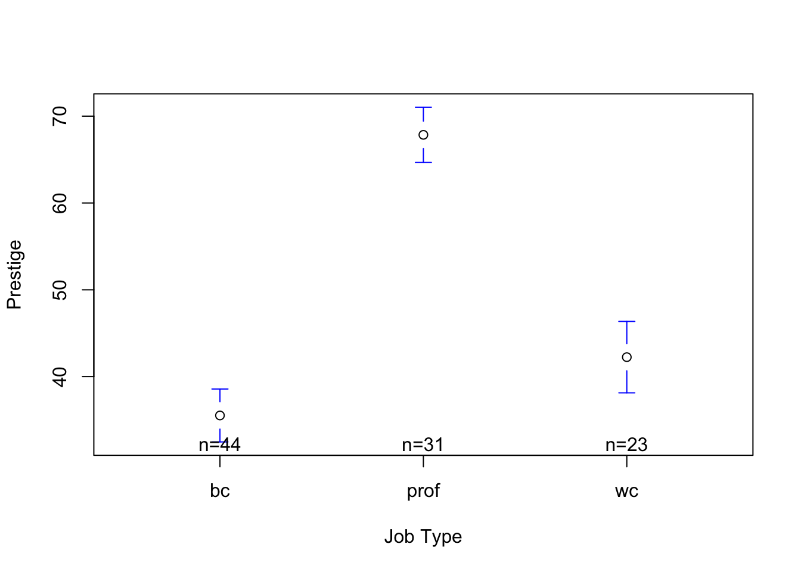
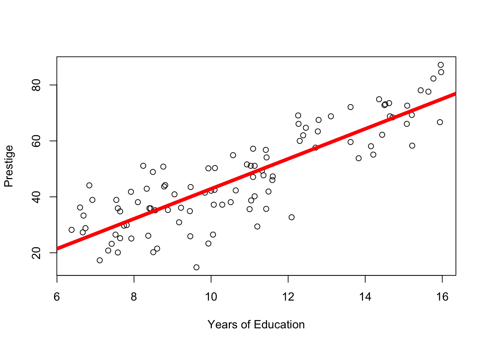
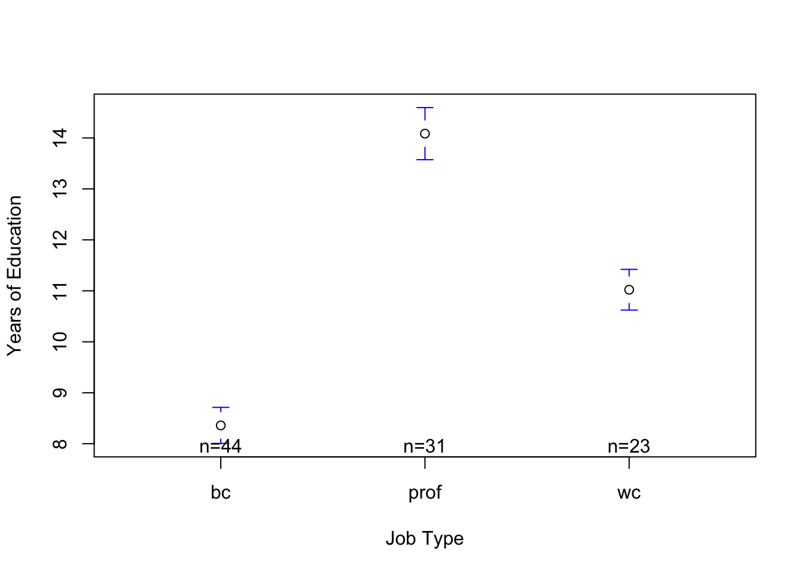

Key Questions : What is redundant covariation and how does this relate to the idea of a 3rd variable?
“The Whole is Greater Than the Sum of Its Parts”
I like the above work by Max Ernst; like all evocative art it manages to transcend the individual brush strokes and colors to express a sense of terror. But if you were to isolate each line and color into its separate components - canvas; blue; brown; red - the sum of those different parts wouldn’t equal the work as a whole.
The idea behind a multiple regression is the same - by combining two separate independent variables into one integrated model, researchers can understand more about the phenomenon than they would understand if they just examined the results of two separate bivariate models.
Specifically, there are two main benefits to the multiple regression :
Examining the unique effects of variables : the first benefit of a multiple linear regression is that we can test whether the effect of one variable (IV1) on another (DV) is unique to that variable, or whether that relationship is also explained by some other variable (IV2). We’ll talk more about this idea throughout this document.
Examining the dependent effects of variables : another benefit of the multiple linear regression is that we can examine whether the relationship between one independent variable (IV1) and the dependent variable (DV) depends on another variable (IV2). This idea is called an interaction effect - we will talk about this in a separate lecture.
This first benefit to a multiple regression may sound familiar; we talked about it (briefly) in the beginning of the semester in the context of confound vs. control variables.
Confound vs. Control Variables
The basic idea was that many variables explain human life, and it’s hard to know whether the relationships we find between one independent variable and the dependent variable are specific to that one independent variable, or whether there’s some other variable that might be influencing the relationship. We talked about this earlier in the semester when we talked about the idea behind a confound variable - a variable that is not part of your model, but would influence the results. The classic example is that ice cream sales are related to murder rates. Of course, ice cream does not really contribute to people getting murdered. There’s a confound variable - heat - that is related to both how much ice cream is sold (the more heat, the more people eat ice cream) and murder (the hotter it is, the more likely people are to kill each other…apparently.) And if you account for that confound variable by including it in your model, then you’d find that the relationship between ice cream and murder goes away…it’s explained by the relationship between heat and murder.
Recap : The Principle of Covariation
Our goal with multiple linear regression is the same goal we’ve been working with so far this semester - to explain complexity. To achieve this goal, we’ve been relying on something that I think of as the “principle of covariation”. With a bivariate linear regression (what we’ve been doing so far this semester), this involves explaining variation on one psychological dimension (the dependent variable) based on variation on another psychological dimension (the independent variable). In other words, making predictions about Y based on information in X.
We wrote out this bivariate model like so :
\[\huge y_i = a + b_1*X_{1i} + {\epsilon}_i\]
To make sure we are all on the same page1, let’s recap what’s going on with this model. On the left-hand side, we are making predictions for some variable (y : the dependent variable) - specifically an individual’s score on that variable (yi : the tiny i represents some specific individual in the dataset). On the right-hand side of the equation, we have a starting place for our predictions (a : the intercept), and then a slope (b1) that describes how we adjust our predictions of Y based on the individual’s specific value of some other variable (X1i : the first independent variable). And since human life is complex, our predictions will not be perfect, but will have error (ei) which we define as the difference between the individual’s actual score (yi) and our predictions for that person’s score (a + b1X1i). Neat.
1 since this is written. har har.
So far, we’ve used the linear model to make predictions of continuous variables based on categorical variables. For example, in the Prestige dataset (download HERE) we predicted prestige from job type (a categorical factor with three levels - blue collar, professional, and white collar).
library(car)
Loading required package: carData
library(gplots)
Attaching package: 'gplots'
The following object is masked from 'package:stats':
lowess
mod1 <-lm(prestige ~ type, data = Prestige)plotmeans(prestige ~ type, data = Prestige, connect = F, ylab ="Prestige", xlab ="Job Type")

summary(mod1)
Call:
lm(formula = prestige ~ type, data = Prestige)
Residuals:
Min 1Q Median 3Q Max
-18.2273 -7.1773 -0.0854 6.1174 25.2565
Coefficients:
Estimate Std. Error t value Pr(>|t|)
(Intercept) 35.527 1.432 24.810 < 2e-16 ***
typeprof 32.321 2.227 14.511 < 2e-16 ***
typewc 6.716 2.444 2.748 0.00718 **
---
Signif. codes: 0 '***' 0.001 '**' 0.01 '*' 0.05 '.' 0.1 ' ' 1
Residual standard error: 9.499 on 95 degrees of freedom
(4 observations deleted due to missingness)
Multiple R-squared: 0.6976, Adjusted R-squared: 0.6913
F-statistic: 109.6 on 2 and 95 DF, p-value: < 2.2e-16
We also used this linear model to make predictions of continuous variables (e.g., prestige) based on other continuous variables (e.g., education).
mod2 <-lm(prestige ~ education, data = Prestige)plot(prestige ~ education, data = Prestige, xlab ="Years of Education", ylab ="Prestige")abline(mod2, lwd =5, col ='red')

summary(mod2)
Call:
lm(formula = prestige ~ education, data = Prestige)
Residuals:
Min 1Q Median 3Q Max
-26.0397 -6.5228 0.6611 6.7430 18.1636
Coefficients:
Estimate Std. Error t value Pr(>|t|)
(Intercept) -10.732 3.677 -2.919 0.00434 **
education 5.361 0.332 16.148 < 2e-16 ***
---
Signif. codes: 0 '***' 0.001 '**' 0.01 '*' 0.05 '.' 0.1 ' ' 1
Residual standard error: 9.103 on 100 degrees of freedom
Multiple R-squared: 0.7228, Adjusted R-squared: 0.72
F-statistic: 260.8 on 1 and 100 DF, p-value: < 2.2e-16
Redundant Covariation
We could go through life (and statistics) by considering simple relationships between two variables. These kinds of bivariate models are a good (and necessary) place to start our inquiry. But no psychological phenomenon is entirely explained by any one variable. Instead, human life is explained by multiple variables that are often related to each other and sometimes work together2 in order to influence behavior. We saw this in the example above, where prestige appears to be separately explained both by job type and education. But the situation gets more complicated, because as a quick test in R reveals, job type and education are also related to each other.
2 we’ll talk about this point (an interaction effect) in the next set of lecture notes.
mod3 <-lm(education ~ type, data = Prestige)summary(mod3)
Call:
lm(formula = education ~ type, data = Prestige)
Residuals:
Min 1Q Median 3Q Max
-2.99419 -0.80932 0.08947 0.61392 2.57068
Coefficients:
Estimate Std. Error t value Pr(>|t|)
(Intercept) 8.3593 0.1800 46.446 < 2e-16 ***
typeprof 5.7249 0.2799 20.450 < 2e-16 ***
typewc 2.6624 0.3072 8.667 1.16e-13 ***
---
Signif. codes: 0 '***' 0.001 '**' 0.01 '*' 0.05 '.' 0.1 ' ' 1
Residual standard error: 1.194 on 95 degrees of freedom
(4 observations deleted due to missingness)
Multiple R-squared: 0.8153, Adjusted R-squared: 0.8114
F-statistic: 209.6 on 2 and 95 DF, p-value: < 2.2e-16
plotmeans(education ~ type, data = Prestige, connect = F, xlab ="Job Type", ylab ="Years of Education")

Compare this output (and graph) to the output (and graph) where we predicted prestige from job type. Spoiler alert - the effects are pretty similar. Blue collar workers are predicted to have the lowest level of education (8.35 years), professionals have 5.72 years of education more than blue collar workers (a significant difference), and white collar workers have 2.66 years of education more than blue collar workers (also a significant difference).
That job type, education, and prestige are all related to each other represents redundant covariation and raises an important possibility - the relationship between job type and prestige could really be due to the relationship between education and prestige. That is, since jobs with more education are rated as having more prestige, and blue collar workers have the least education (on average), the reason why blue collar jobs have the least amount of prestige could be better explained by differences in education. Similarly, professionals might be rated as having the most prestige because they have the most education. Of course, it’s also possible that education is related to prestige because of the type of job that workers have.
With separate bivariate models, it’s impossible to know whether these two independent variables are uniquely related to prestige or whether one variable is more related to prestige than another because we are only looking at one relationship at a time. The multivariate regression - one that predicts prestige simultaneously from both education and job type - will help sort out this issue.
Multivariate Linear Regression : A More Complex Model
In order to better understand the complexity of human life, we’ll need to define a more complex model that explains some dependent variable as a function of multiple independent variables. This is called a multivariate (multiple variables) linear regression model, or a multiple regression for short. In a multiple linear regression, we are going to use…wait for it…multiple independent variables to make predictions about the dependent variable.
At first, this model may look scary, but it’s actually quite familiar - we are making predictions about some specific individual’s score on some specific variable (y), but now are using information in multiple variables (X1 and X2) to update our predictions of y. The ’k’s indicate that you can build a model with as many predictors as you want (this will create complications that we’ll talk about later…).
Below is a model where we predict prestige from both education and job type. Spend a few minutes looking at this output, and see if you can interpret it. (Don’t worry, we’ll get to the NHST stuff later.)
mod4 <-lm(prestige ~ education + type, data = Prestige)coef(mod4)
Alright, hopefully you felt like a lot of the output from this multivariate linear regression model was somewhat familiar. If not, that’s okay…the good news is that much of this output can be interpreted in the SAME WAY that we interpreted the output from a bivariate relationship.
Components of the Multivariate Linear Regression
This more complex model is comprised of the following components :
the intercept : I say intercept, you say….3 The intercept in this model describes the predicted prestige for someone with zero years of education, who is NOT a professional, and is NOT a white collar worker - in other words an uneducated blue collar worker. Because no one in the sample actually had less than six years of education, an education of zero does not make sense, which is why the prestige is below zero.
the slope of education : this describes the relationship between education and prestige - for every year of education, we add 4.6 prestige points. Critically, this is the relationship between education and prestige controlling for the effect of job type (the unique effect of education.)
the slope of professional : this coefficient describes the change in our predictions between the reference level (blue collar workers - defined by the intercept) and professionals, controlling for the effect of education (the unique effect of being a professional worker). When accounting for the effect of education in the model, professionals have 6.1 more prestige points than blue collar workers.
the slope of white collar : this coefficient describes the change in our predictions between the reference level (blue collar workers - defined by the intercept) and white collar workers, controlling for the effect of education. When accounting for the effect of education in the model, white collar workers are predicted to have 5.6 less prestige points than blue collar workers.
3 THE PREDICTED VALUE OF Y WHEN ALL X VALUES ARE ZERO
We can use this model to make predictions for specific individuals : Ŷ ~ -2.7 + 4.6(Xeducation) + 6.1(Xprof) - 5.5 (Xwc)
Pop Quiz : Use this model to calculate the predicted values of Y for….
Because your multivariate model will contain two different independent variables, it’s likely that the scale of your two IVs will be different. To assist in comparing the change between models, or comparing the slopes within one multivariate model, it’s important to scale (standardize or z-score) your variables.
We did this before, when we used the scale function to transform each variable in the model.
But there’s a better way to do this, AND to export our analyses. All in one handy-dandy table.
If you are reading this far, go ahead and try a new function - export_summs() from the jtools library. You’ll need to install this new package install.packages("jtools"), and then load this to your library.
We can use the export_summs() function to export the summary of multiple models, and then ask R to transform both the response (DV) and IVs.
All continuous variables are mean-centered and scaled by 1 standard deviation. *** p < 0.001; ** p < 0.01; * p < 0.05.
What’s lovely about this kind of table is we can look across each row, and see how the coefficients for each variable change across our models. Remember - the reason we were doing a multivariate regression is to see how the bivariate relationships between the independent and dependent variables change when you account for redundant covariation.
Types of Changes Between the Multivariate and Bivariate Models
There are three different ways that the relationships can change from the bivariate to multivariate model - I’m simplifying these concepts a bit for the sake of this introductory class. Links to more information if you want to learn more about the precise definition and application of the terms.
Independent Effects : The relationship between IV1 and the DV does not substantially change when IV2 is included in the model. This means that the relationship between IV1 and the DV is not explained by IV2. If your goal is to show that there is a significant relationship between IV1 and the DV, and that relationship does not go away when you include IV2 in your model, then this is what you are hoping to find.
Mediation Effects : The relationship between IV1 and the DV is weakened (which is called partial mediation) or goes away completely (which is called full mediation) when IV2 is included in the model. This means that the relationship between IV1 and the DV is dependent on the other variable. You can read more about this here.
Suppressor Effect : The relationship between IV1 and the DV is strengthened(or changes direction) when IV2 is included in the model. You can read more about this here.
TipACTIVITY : Look over the models. How do the slopes change from Model 1 to Model 3? From Model 2 to Model 3?
The difference (slope) between professionals and blue collar workers that we saw in Model 1 (ß = 1.89) goes down and becomes non-significant (ß = .36; this is called mediation). The the difference (slope) between white collar and blue collar workers in Model 1 (ß = .39) changes in direction in Model 3 to become (ß = -.32; this is called a suppressor effect).
The effect of education as seen in the bivariate model (Model 2 ß = .85) remains about the same in Model 3 (ß = .74; this is called an independent effect, since the effect of education is not influenced by the addition of job type in the model).
Reasons Why The Relationship Changes Between Models
Remember, there are always two reasons why we’d see a change.
chance : the change in the slope was just due to some kind of sampling error; the difference between the models is really just random chance.
some real effect. IV2 really does change the relationship between IV1 and the DV : that is, there is some real relationship between IV2, IV1, and the DV that changes the slopes in your model.
There are various ways to test for whether the change in slopes is large enough to be important / statistically significant. One method is is something called bootstrapping - I’ll eventually put this in a supplemental chapter, but the basic idea is that you run a for-loop to resample the data, estimate the slope in a bivariate vs. multivariate model (from a new dataset), and then save the difference in slopes to “bucket” (or whatever you have named the array), and then repeat the process 1000 times. Another method to test for the difference is called the “Sobel Test”; you can read about it here or here if you want. Or not!
More Practice
Okay, that was a lot! A few more resources to help and test your understanding.
A MULTIPLE REGRESSION VIDEO :
Hey, do you like my disembodied voice explaining things on top of an R screenshot? Well good news, in this video I go through another example of multiple regression in R.
Here’s the R script I used; the data come from the “hormone” dataset, posted to bCourses.
![A crumbling city looms oppressively below the ring-shaped moon. Ernst made a whole series of such works. The imagery may reflect his pessimism as Nazism took hold in his native Germany. The ruined cityscape was created using a technique that Ernst called ‘grattage’ (scraping). It involved placing the canvas over planks of wood or other textured surfaces, then scraping paint across it. The shapes that emerged formed the basis of the image. Grattage was one of a number of techniques that Surrealist artists explored as a way of letting a chance element into their work.](images/clipboard-2498404660.png)